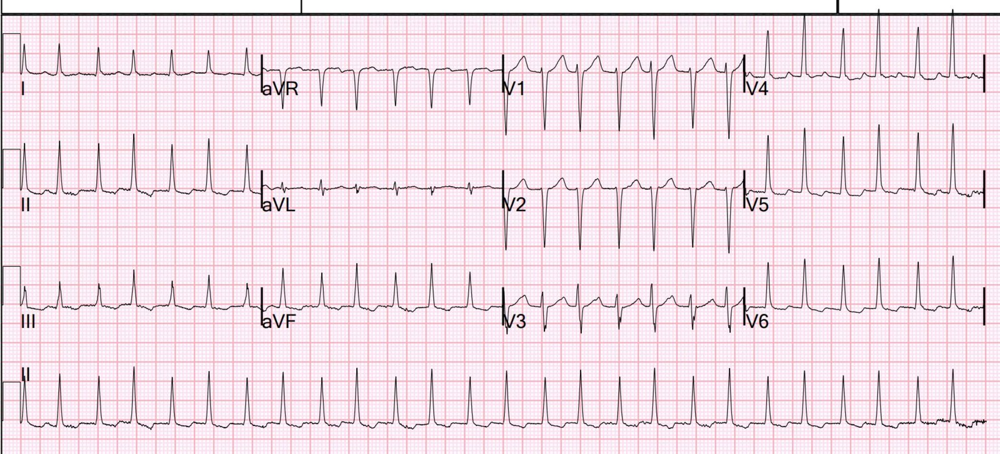
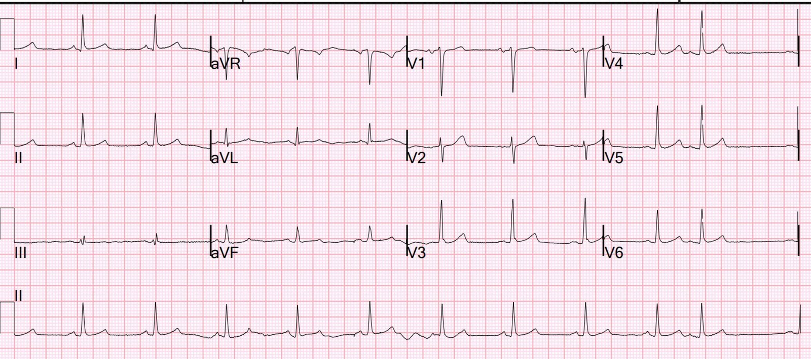
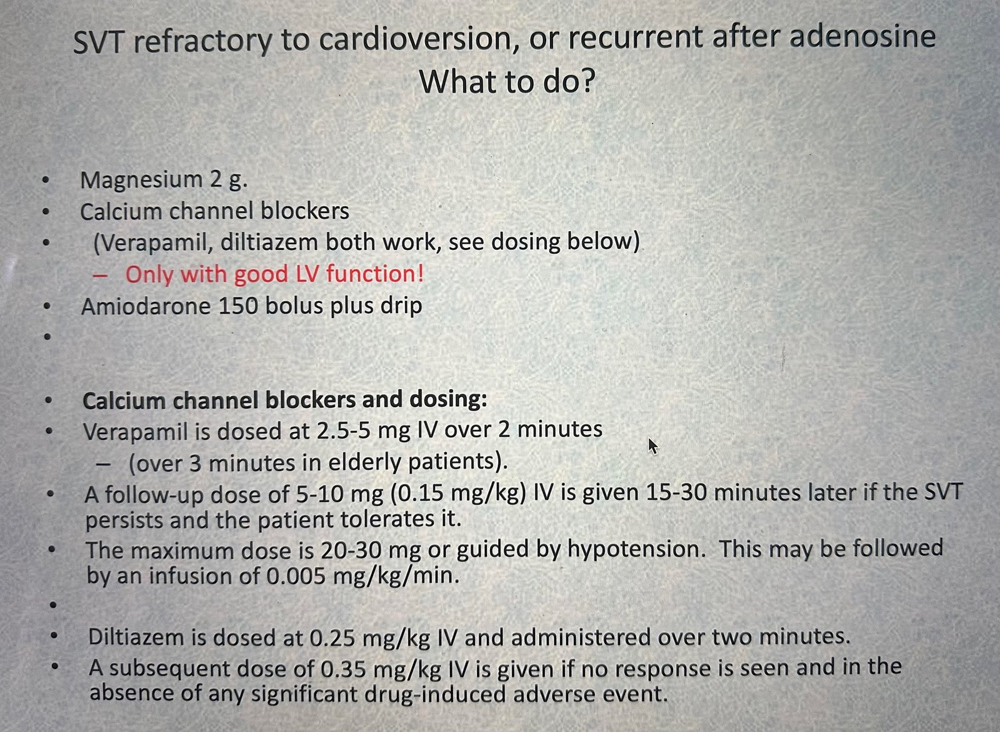
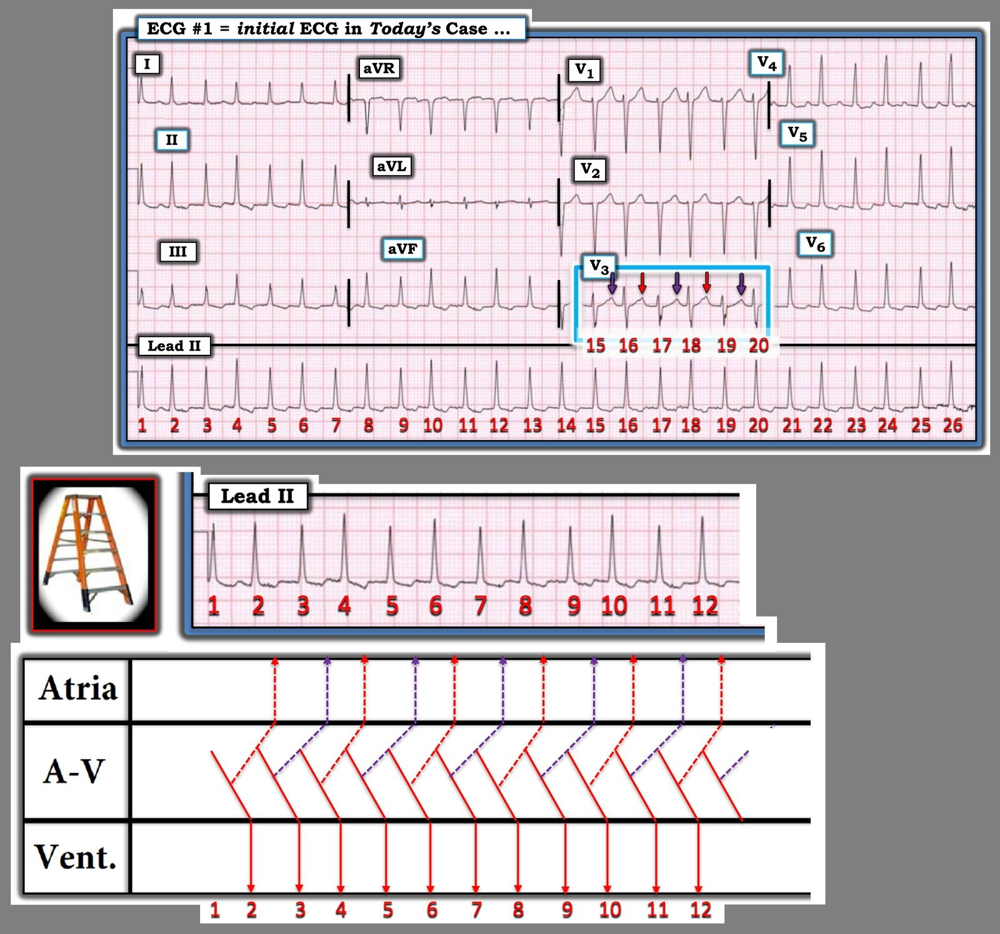

06/01/2026 — Nhịp nhanh QRS hẹp; tái phát sau adenosine. Bây giờ chúng ta nên làm gì?
Bản dịch tiếng Việt của bài "Narrow complex tachycardia; it recurs after adenosine. What should we do now?" – Dr. Smith’s ECG Blog. Giữ nguyên toàn bộ 4 hình ảnh và 2 video của bản gốc.

Một bệnh nhân nam ngoài 50 tuổi đến khám vì hồi hộp đánh trống ngực (palpitations). Ông bị sốt và tụt huyết áp (HA 80/40). Tình trạng thể tích dịch của ông thấp trên siêu âm (tĩnh mạch chủ dưới [IVC] xẹp dẹt), và chức năng thất trái tốt. Không có đường B. Ông có tiền sử rung nhĩ (atrial fibrillation) và đã được triệt đốt (ablation), nhưng gần đây vẫn ở nhịp xoang. Bệnh nhân được truyền dịch tĩnh mạch, và vì tần số tim 190 nhịp/phút, điện tâm đồ này đã được ghi:


Tần số tim 156. Bạn nghĩ gì?
Đây là một nhịp nhanh QRS hẹp không có sóng P (bạn phải tìm sóng P thật cẩn thận!! Nhất là ở bệnh nhân đang sốt (do đó, là nhịp nhanh trên thất, hay SVT). Đó có thể là cuồng nhĩ, AVNRT, AVRT (WPW), hoặc nhịp nhanh nhĩ. Không có sóng cuồng nhĩ. Nhịp không phải không đều hoàn toàn, nên KHÔNG phải rung nhĩ. Tuy nhiên, nhịp lại không đều một cách đều đặn, vì có 2 khoảng RR khác nhau (và mỗi khoảng có biên độ điện thế riêng!). Một khoảng RR là 360 ms, khoảng kia là 400 ms. Tôi không thấy sóng P nào, kể cả sóng P ngược dòng, và nhịp nhanh xoang tần số 190 sẽ rất bất thường ở một người ngoài 50 tuổi.
Bàn thêm một chút, không quyết định đến xử trí: Các khoảng RR khác nhau gợi ý PSVT (SVT kịch phát) do AVNRT với ba đường dẫn truyền trong nút AV. Xem this amazing case of dual AV nodal pathways in addition to a 3rd pathway which is an accessory pathway (WPW) cùng phần giải thích và sơ đồ về ý nghĩa của hiện tượng này. Mọi AVNRT đều có 2 đường dẫn truyền, một nhanh và một chậm. Trong ca này, để có 2 tốc độ khác nhau, và vì không có đường phụ, đường thứ ba nằm bên trong nút AV. Nhiều khả năng có một đường nhanh và 2 đường chậm. Xem bài báo này: Typical Atrioventricular Nodal Re-Entry Tachycardia Masquerading as Atrial Fibrillation.
Bạn sẽ làm gì?
Adenosine là một lựa chọn tốt, sốc điện cũng vậy. Sốc điện đòi hỏi an thần sâu, mất nhiều thời gian hơn adenosine, nên tôi sẽ bắt đầu bằng adenosine.
Các bác sĩ điều trị đã tiêm adenosine. Nhịp chuyển về nhịp xoang, rồi nhanh chóng tái phát trở lại nhịp ở trên.
Giờ bạn sẽ làm gì?
Vì nhịp đã tái phát, chẳng có ích gì khi dùng một biện pháp điều trị chỉ kéo dài vài giây, vì nhịp sẽ lại tái phát LẦN NỮA. Điều này có nghĩa là cả sốc điện lẫn adenosine đều không đem lại nhịp xoang bền vững.
Các bác sĩ điều trị đã thử adenosine thêm 2 lần, và mỗi lần nhịp đều chuyển về xoang rồi tái phát SVT. Sau đó họ thử sốc điện chuyển nhịp (việc này vô ích!). Cả hai lần nhịp đều chuyển rồi lại tái phát. Họ hội chẩn tim mạch, và bác sĩ tim mạch khuyến cáo tiêm bolus rồi truyền liên tục amiodarone. Việc này không có tác dụng.
Bệnh nhân vẫn tụt huyết áp sau khi truyền dịch.
Tôi vào ca trực tại khoa cấp cứu (ED) vào thời điểm này. Cách làm của tôi là, khi SVT tái phát, trước hết tôi bảo đảm đã bù đủ K và Mg, và nếu việc này không ngăn được tái phát, và nếu chức năng thất trái tốt, thì tôi muốn dùng một thuốc ức chế nút AV có tác dụng kéo dài (adenosine và sốc điện đều hết tác dụng rất nhanh). Nghĩa là một thuốc chẹn kênh calci (verapamil hoặc diltiazem). Khi tôi mới bắt đầu làm cấp cứu, chưa có adenosine và chúng tôi luôn dùng verapamil cho SVT. Thuốc có hiệu quả và dữ liệu cho thấy khá an toàn (một phân tích gộp cho thấy tụt huyết áp 4% so với 1% với adenosine).
Chỉ dùng thuốc chẹn kênh calci khi chức năng thất trái tốt!! Các thuốc này làm giảm sức co bóp và có thể dẫn đến sốc ở bệnh nhân có chức năng thất trái kém.
Bệnh nhân đã đang được tiêm bolus và truyền liên tục amiodarone. Vì vậy tôi đề nghị trước hết thử sốc điện chuyển nhịp để xem amiodarone có giữ được bệnh nhân ở nhịp xoang hay không. Bệnh nhân chuyển về nhịp xoang và lại tái phát SVT chỉ trong vài giây.
Vì vậy chúng tôi ngừng amiodarone. Chúng tôi bắt đầu truyền phenylephrine để điều trị tụt huyết áp trước khi dùng thuốc chẹn kênh calci, vốn có thể làm tụt huyết áp nặng thêm. Chúng tôi dùng phenylephrine để tránh tác dụng kích thích beta của norepinephrine – kích thích beta có thể khiến SVT khó kiểm soát hơn). Sau khi HA tăng lên 105/70, chúng tôi tiêm bolus diltiazem (không dùng verapamil chỉ vì khoa cấp cứu của chúng tôi không có sẵn thuốc này) và nhịp chuyển ngay lập tức và bền vững về nhịp xoang.


= = Sin=Nhịp xoang với tần số 66.
Đồng thời bắt đầu truyền liên tục diltiazem.
X-quang ngực xác nhận viêm phổi. Bệnh nhân vẫn tụt huyết áp. Lưu ý rằng không có nhịp nhanh xoang phản xạ thích hợp, điều mà người ta vừa mong muốn (để cải thiện cung lượng tim) vừa trông đợi (như vẫn xảy ra trong nhiễm khuẩn huyết kèm tụt huyết áp). Nhịp chậm xoang tương đối này dĩ nhiên là do diltiazem, thuốc làm chậm tần số xoang. Vì thế, bệnh nhân tiếp tục cần phenylephrine để hỗ trợ huyết áp.
Cuối cùng bệnh nhân hồi phục tốt.
Dưới đây là một số hướng dẫn xử trí SVT. Sau đó hãy xem các ca khác bên dưới:


Đây là một ca duy trì được nhịp xoang bền vững sau khi dùng magnesi. Có phần tổng quan y văn tốt ở đây.
Đây là một ca mà tôi đã thử chẹn beta (esmolol) nhưng thất bại và amiodarone lại có hiệu quả. (Lẽ ra tôi nên dùng thuốc chẹn kênh calci)
= = = =
======================================
BÌNH LUẬN CỦA TÔI, bởi KEN GRAUER, MD (7/1/2026):
Ca hôm nay của Dr. Smith nêu bật một loạt điểm quan trọng về đánh giá và xử trí các nhịp SVT (nhịp nhanh trên thất – SupraVentricular Tachycardia) do vào lại. Những điểm này gồm:
- Bệnh sử có thể cho nhiều gợi ý. Bệnh nhân trong ca hôm nay từng bị rung nhĩ (AFib) — đã được triệt đốt thành công. Như Romero và cs. đã ghi nhận (Heart Rhythm 4(11):1637-1646, 2017) — triệt đốt rung nhĩ qua ống thông có thể tạo thuận lợi cho sự xuất hiện về sau của một nhịp SVT do vào lại (tức là AVNRT, AVRT) do làm thay đổi đặc tính của các đường dẫn truyền, qua đó có thể tạo điều kiện hình thành và duy trì một vòng vào lại.
Rất DỄ bỏ sót hình mẫu nền của nhịp hôm nay. Chẳng hạn, khi lần đầu nhìn thấy nhịp hôm nay — BẠN có nghĩ nhịp này đều không?
- Như Dr. Smith đã nêu — nhịp hôm nay không đều. Thay vào đó — có một tính không đều có quy luật , dưới dạng một hình mẫu lặp lại trong đó các khoảng R-R hơi dài hơn xen kẽ với các khoảng R-R hơi ngắn hơn (tức là, các khoảng R-R trong Hình 1 bắt đầu bằng các nhát mang số chẵn hơi dài hơn các khoảng R-R bắt đầu bằng các nhát mang số lẻ).
- Ngay cả không cần compa đo (calipers) — vẫn có thể nhận ra tính không đều có quy luật này nếu bạn tập trung một lát vào dải nhịp DII dài nằm bên dưới điện tâm đồ 12 chuyển đạo ở Hình 1.
- Nhận ra rằng nhịp nhanh QRS hẹp (do đó là trên thất) này có một hình mẫu lặp lại — ngay lập tức thu hẹp chẩn đoán phân biệt (differential diagnosis) nhờ loại trừ nhịp nhanh xoang và rung nhĩ.
- Cuồng nhĩ (AFlutter) và nhịp nhanh nhĩ (ATach) cũng ít có khả năng — vì mặc dù dẫn truyền kiểu Wenckebach có thể đi kèm 2 nhịp SVT này, sự thay đổi khoảng R-R tinh tế theo kiểu cách-một-nhát ở tần số nhanh như thấy trong Hình 1 điển hình hơn nhiều cho một SVT do vào lại (AVNRT hoặc AVRT).
= = =
Hình 1: Tôi đã vẽ lại điện tâm đồ hôm nay — kèm giản đồ bậc thang (laddergram) mà tôi đề xuất.


= = =
Có hoạt động nhĩ không?
- Sóng P xoang bình thường rõ ràng không có trong Hình 1. Tuy nhiên, có sự thay đổi đoạn ST theo từng nhát mà theo tôi gợi ý có thể có một dạng hoạt động nhĩ nào đó ẩn bên trong.
- Tôi cho rằng hình mẫu thay đổi đoạn ST cách-một-nhát gợi ý rõ nhất ở chuyển đạo V3 (trong hình chữ nhật XANH LAM ở Hình 1) — dù hình mẫu này không thấy nhất quán ở các chuyển đạo khác.
- Ngoài dấu gợi ý dẫn truyền nhĩ ngược dòng này — dường như còn có điện thế luân phiên (electrical alternans) ở một số chuyển đạo trong Hình 1 (tức là thay đổi hình dạng QRS cách-một-nhát thấy rõ nhất ở chuyển đạo V3 — nhưng cũng thấy nhất quán ở các chuyển đạo II,aVF; và ở V4,V5,V6 dưới dạng biên độ QRS luân phiên).
- Như tôi đã điểm lại chi tiết trong bài ngày 28 tháng Mười Một năm 2022 trên Dr. Smith’s ECG Blog (trong phần My Comment ở cuối trang) — sự hiện diện của điện thế luân phiên làm tăng khả năng đây là một nhịp SVT do vào lại.
= = =
Cơ chế của nhịp hôm nay
Vậy tại sao chúng ta lại thấy các khoảng R-R luân phiên trong SVT do vào lại hôm nay?
- Điều chống lại dẫn truyền kiểu Wenckebach là không có nhát bị rớt.
- Thay vào đó — tôi nghi ngờ sự hiện diện của đường dẫn truyền kép trong nút AV (dual AV nodal pathways), mỗi đường có tốc độ dẫn truyền ngược dòng riêng, là lý do khiến các khoảng R-R luân phiên tồn tại dai dẳng trong nhịp hôm nay.
- Giản đồ bậc thang lý thuyết mà tôi đề xuất trong Hình 1 ở trên minh họa một đường có dẫn truyền ngược dòng hơi chậm hơn (các đường đứt nét màu TÍM) luân phiên với đường thứ hai có dẫn truyền ngược dòng hơi nhanh hơn (các đường đứt nét màu ĐỎ).
= = =
Những điểm MẤU CHỐT trong xử trí:
Phần bàn luận ở trên của Dr. Smith nhấn mạnh tầm quan trọng của việc nhận ra rằng nhịp hôm nay thực sự là một SVT do vào lại.
- Adenosine đã được tiêm — và nhanh chóng cắt được cơn SVT (như hầu như luôn xảy ra với các nhịp SVT do vào lại). Đôi khi chỉ cần như vậy là đủ. Tuy nhiên, trong ca hôm nay — nhịp nhanh chóng tái phát trở lại SVT do vào lại.
- Việc nhịp hôm nay chuyển ngay lập tức sau liều Adenosine đầu tiên ủng hộ mạnh mẽ giả thuyết rằng đây là một SVT do vào lại (AVNRT hoặc AVRT).
- Việc nhanh chóng tái phát trở lại SVT do vào lại cho chúng ta biết rằng cả các liều Adenosine lặp lại lẫn sốc điện chuyển nhịp đều sẽ không thành công trong việc duy trì nhịp xoang. Thay vào đó — sẽ cần một thuốc tác dụng kéo dài hơn ( = Diltiazem tĩnh mạch trong ca hôm nay) để duy trì nhịp xoang.
ĐIỂM THEN CHỐT (PEARL): Hãy nhớ luôn luôn ghi một dải nhịp chuyển đạo dài trong 60 đến 90 giây sau khi tiêm Adenosine! Lý do là mọi việc diễn ra rất nhanh sau khi bạn tiêm Adenosine — và rất DỄ bỏ lỡ một sự thật quan trọng là Adenosine đã làm được việc của nó và chuyển nhịp về xoang, trừ khi bạn có một bản ghi giấy để xem lại.
- Nếu không, mọi “diễn biến” sẽ kết thúc chỉ trong vài giây và bạn có thể dễ dàng bỏ lỡ khoảnh khắc chuyển về nhịp xoang vì mắt bạn đang nhìn bệnh nhân.
- Ngay khi chúng ta thấy Adenosine đã làm được việc của nó — nhưng bệnh nhân lập tức tái phát trở lại SVT — chúng ta biết đã đến lúc ngừng tiêm Adenosine, và thay vào đó dùng một thuốc tác dụng kéo dài.
= = =
= = =